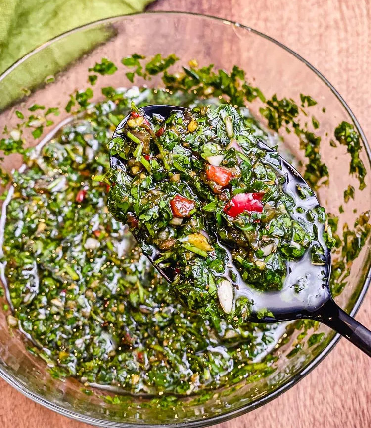

Chimichurri Recipe

Originating from Argentina and Uruguay, chimichurri is a condiment that combines olive oil and vinegar with fresh herbs. It's full of flavor, and complements any grilled meat. It's best served at room temperature and as a dipping sauce, or applied directly to grilled meat or fish.
Ingredients
- 2 cup fresh Italian flat-leaf parsley, finely chopped
- ½ cup fresh cilantro, finely chopped
- 3 cloves garlic, finely minced
- 1 shallot, finely chopped
- 1 Fresno pepper, seeded and finely diced (or red jalapeño)
- 2 tsp dried oregano
- 3/4 cup extra-virgin olive oil
- ¼ cup red wine vinegar
- 1 ½ tsp coarse sea salt (or salt to taste)
- ½ tsp black pepper, fresh coarse ground
- ½ tsp smoked paprika
Description
Prep the Ingredients.
- Prep your ingredients by rough chopping them. Then, place them into a food processor (minus the oil, vinegar and salt.)
- Pulse the food processor several times, until the ingredients are finely minced.
Finish it up.
- Transfer the minced ingredients into a mixing bowl, and add in the oil, vinegar, and salt.
- Mix thoroughly, and taste. Adjust the salt and vinegar as needed.
Serve and Enjoy!